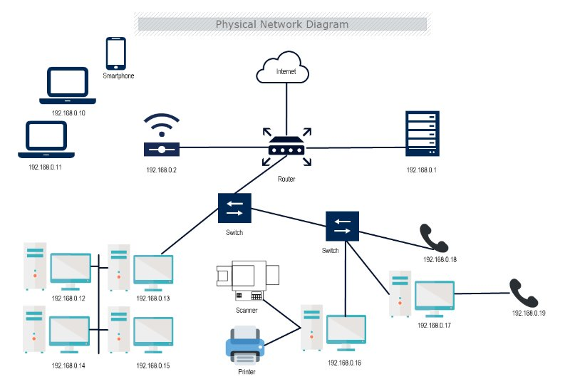

How DNS, IP addressing, HTTP/HTTPS, and security headers work in this deployment.
01 · DNS
When you type this site's URL, the browser first performs a DNS lookup — translating the human-readable domain into a numeric IP address. GitHub Pages uses its own nameservers for the github.io subdomain.
The resolution chain goes: browser cache → ISP's resolver → GitHub's authoritative DNS servers.
02 · IP Addressing
An IP address is the numeric identifier for every device or server on the internet. When DNS resolves this site, it returns GitHub's CDN server IPs — the machines that serve the files to your browser.
GitHub Pages supports both IPv4 (32-bit) and IPv6 (128-bit). IPv6 was introduced to address the exhaustion of available IPv4 addresses.
| Feature | IPv4 | IPv6 |
|---|---|---|
| Size | 32-bit | 128-bit |
| Example | 185.199.108.153 | 2606:50c0::153 |
| Address space | ~4.3 billion | 340 undecillion |
| GitHub Pages | ✓ | ✓ |

Figure 1 — Physical network diagram illustrating IPv4 addressing across routers, switches, and end devices.
03 · Protocols
HTTPS is HTTP with TLS encryption. Without it, data is transmitted in plaintext and readable by anyone who intercepts it. GitHub Pages automatically provisions a free TLS certificate for all github.io sites and enforces HTTPS by redirecting any plain HTTP request.
| Property | HTTP | HTTPS |
|---|---|---|
| Port | 80 | 443 |
| Encrypted | No | Yes |
| Certificate | Not required | Required |
| Used here | — | ✓ Enforced |
04 · Headers & Status Codes
HTTP headers carry metadata with every request and response — things like content type, caching rules, and security policies. These can be viewed in any browser's DevTools under the Network tab (F12).
GitHub Pages automatically includes several security headers, including HSTS (which tells browsers to always use HTTPS for this domain).